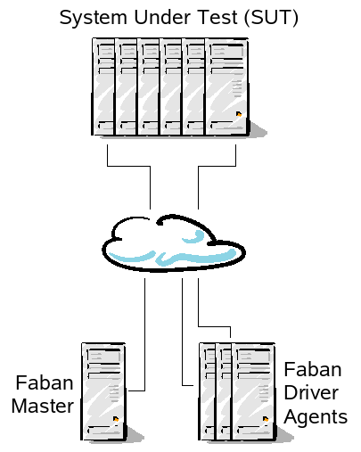

The
audience
of Faban is divided
into many roles, dependent on
what your role is and what you want to make Faban do for you. Once you
have Faban installed, knowing your role and objectives will prevent you
from wading through the documentation and get you productive right
away. So know your roles:
Benchmark
tester - You deal with a benchmark that was already
developed for Faban or integrated with the Faban harness. You'll want
to know how to submit runs, read the results and statistics collected
throughout the run.
fhb (Faban HTTP Bench)
user - You do not have a predefined benchmark but want to
create simple to moderately complex http tests. The fhb tool provides a
simple command line interface to generate load and measure throughput
and response times against arbitrary web sites. Moderately complex
workloads can be defined in a workload configuration file and passed to
fhb at invocation.
Benchmark
developer - You may have started as a fhb user and found
that fhb can no longer satisfy your needs. You need to create your full
blown workload to satisfy your requirements. The Faban driver framework
allows you to do just that. In addition, the Faban harness allows you
to customize the benchmarking process to handle tasks such as
starting/restarting the server, data preparation, post-processing, etc.
Benchmark
integrator - You already have a benchmark, but the Faban
harness adds a lot of value controlling the process of running the
benchmark, collecting stats, as well as reporting and storing results.
You want to provide your own hook to get this benchmark to run inside
the Faban harness.
This picture illustrates a typical configuration of a
Faban test environment.
A Faban rig composes of one Faban master and optionally a
number of agent systems that drives the load to the SUT. The Faban
master typically runs a web server listening to port 9980 and provides
the user interface for Faban. It also controls the process of
the benchmark runs. The driver agent systems drive the load. The master
may or may not act as an load driving agent by itself, dependent on the
configuration. The system under test - or SUT - runs the server
software that is being tested. The system under test may also run a
Faban command agent which is a small, quiet process acting as a proxy
for starting/stopping server processes as well as collecting relevant
statistics on these server systems.
As a special case, fhb (Faban HTTP Bench) does not support
multiple driver agents. It also does not make use of the Faban master
process for the web user interface. In contrast, fhb drives the load
from a sinigle system and uses the command line interface for
invocation. It also cannot control server processes on the SUT or
collect any statistics for that matter. Faban is constrained to only
one system acting as both the master and the driver agent.
As you now probably have a vague idea on how you want to use
Faban and how a Faban rig looks like, lets dive straight into getting
Faban installed.
Prerequisites
Either Unix® or Windows® operating system. Linux®,
Oracle® Solaris, and
Windows 2003 and later have been tested.
For Windows, installation paths for both Faban and the JDK
must not have spaces in the path. DO
NOT install in C:\Program Files.
Select the user for running Faban - It is recommended that
the user running Faban
be the same user name and user id on all compatible systems, where
applicable (Unix and Windows are not user name or id compatible).
JDK1.5 or later - The JDK should be installed on the same
path
on all systems.
Download the Faban kit - you'll need the full
faban-kit-<build>.tar.gz for the master. The rest of the
systems, possibly including the SUT, may have either the
faban kit or a minimal faban agent installed.
Installation
Login using the selected user on all the systems.
Choose one of the machines not part of the SUT to be the
master.
Note that the master may or may not actually drive the
load.
Untar faban-kit-<build>.tar.gz
in the chosen
directory on the master system. This will create a sub-directory named faban.
We will refer to this
directory as FABAN_HOME.
For instance, if you choose to untar the tar
file in /opt
directory (assuming the user name is faban), then /opt/faban is
going to be the FABAN_HOME.
Use the following command to untar the files: $ gunzip -c
<filename>
| tar xvf -
Linux and some other Unix systems use gnu tar which automatically
recognizes gzip-compressed files. If your system uses gnu tar, you can
alternatively use the following command: $ tar xvf
<filename>
If you install Faban just to use fhb, you can
go directly to the fhb resources listed in Next
Steps.
Install the Faban agent on all non-master systems in the
rig that
need
the agent. The master already has the agent as part of the Faban
installation. This step is not needed if the only system needing the
agent is the master system itself. Note: This may include systems that
are in the SUT, too. You
may use the same command as in (3) above. Alternatively, you can also
install the xtremely small Faban agent package instead. To do
so, you'll need to generate the Faban agent package first using the
following command:
$ FABAN_HOME/bin/makeagent
This will create a file called faban-agent.tar.gz
in your system's tmp directory. You'll need to copy this faban-agent.tar.gz
to all the systems and install it into the respective FABAN_HOME,
i.e. possibly same FABAN_HOME
for the whole rig.
If rsh/ssh is already setup (please see Network
Setup
below), or you are just upgrading Faban, you can also use the provided
pushagents script. This will implicitly call makeagent and try to
install the agents on the target systems. You can call the
pushagents script as follows:
The -s option is used for specifying the use of scp
and ssh instead of the equivalend rcp and rsh.
If it is not possible to install Faban in the same path for all
path-compatible systems, symbolic links for FABAN_HOME work on
all systems but
the master.
For Unix variants only, and only if you choose to install
Faban as a non-root user, you need to run rootinstall.sh
for all tools to work properly. Login as the root user or change user
to root via the su or sudo command and run this script as following:
#
FABAN_HOME/bin/rootinstall.sh
If you have sudo installed, you may also run the command as follows:
$ sudo
FABAN_HOME/bin/rootinstall.sh
Network Setup
Faban has two major ways to communicate with the agents: 1) By
starting the agent daemons and 2) by having Faban start the agents
using a remote shell facility such as rsh or ssh. Note that
combinations between agent daemons and remote shells are allowed.
However, we cannot mix between differen remote shell facilities. For
example, mixing rsh and ssh in the same rig cannot be done.
The first step for setting up the network is, of course,
ensuring that you have physical network connection to all systems in
the rig. The ping utility is a good tool to ensure such connectivity.
Make sure you can ping all network interfaces you may want to use, from
all systems using those interfaces in the rig.
Next step is to choose between agent daemons or rsh/ssh. As
mentioned earlier, combining agent daemons and rsh or ssh (or other
remote shells) are supported. But no more than one remote shell is
supported. Setting up each mechanism is discussed below
Starting the Agent as a daemon
Starting the Agent as a daemon is very straightforward. You'll
want to run FABAN/bin/agent
by hand or from an auto-invocation mechanism such as init.d on Unix or
autoexec on Windows. Note that the agent daemon is to be started for
all the systems wishing to use this mode of communications except the master
itself. DO NOT
start the agent daemon on the master.
Setting up rsh
If you want to use rsh for bootstrapping the remote agents,
follow the following procedure:
Edit the .rhosts file of the selected user so that Faban
can
rsh
to all the systems that are part of the setup without being prompted
for
a password. You just need to add '+' character in the /.rhosts file.
Note that this step applies to all the systems but the master,
including all systems in the SUT that will be managed by Faban.
Check that the master and other clients
can “rsh
<hostname>
ls” each other without being prompted usually saves some time.
This command will ensure that the harness can startup, shutdown, and
reconfigure services on all systems.
Setting up ssh
Setting up ssh is conceptually the same as setting up rsh. But
due to the trust management of a secure shell, the process is actually
much more complicated. First you will need to ensure that the systems
can ssh to each others and run remote commands without requiring a
password. This is system dependent and may be dependent on the ssh
implementation. This is not discussed in this document. You may find Tim
Cook's
SSH Cheat Sheet blog entry a useful help for setting up ssh.
After ssh is setup, the following process will test ssh and configure
Faban to use ssh instead of rsh.
Check that the master and other clients
can “ssh
<hostname>
ls” each other without being prompted usually saves some time.
This command will ensure that the harness can startup, shutdown, and
reconfigure services on all systems.
Edit the platform-specific command map on the master. The
command map can be found at FABAN_HOME/config/<os>/cmdmap.xml.
For example, on Solaris the file will be at FABAN_HOME/config/SunOS/cmdmap.xml.
Edit
the file and look for a command entry for rsh, such as
follows:
All done and ready to go! Now you just simply start the Faban
harness using the following steps:
You may need to set the JAVA_HOME
environment variable to a
JDK1.5 installation.
Bring up the Faban harness on the master driver machine.
On Unix: $
FABAN_HOME/master/bin/startup.sh
On Windows: > FABAN_HOME\master\bin\startup-using-launcher.bat
Access the harness interface from a browser window. Point
your
browser to http://<hostname>:9980/
or http://localhost:9980/
if you run the browser on your local host.
Next Steps
Congratulations! You have Faban up and running. So what do you
do next. Remember your roles? Go to the respective documentation to get
you started for your specific roles:
Faban does not require any extra configuration. However, you
may run into cases where you need certain administrative features such
as security and auditing on a Faban master or special kinds of
configurations allowing access to Faban through a Firewall. These many
Faban features and a more detailed documentation on your Faban
installation in general is provided in the Faban
Harness Configuration
Guide.
If
you cannot find the information you need or are trying to solve a
specific problem that is not documented or not well documented, please
post your questions on our mailing list at users@faban.sunsource.net.
Good luck & have fun.